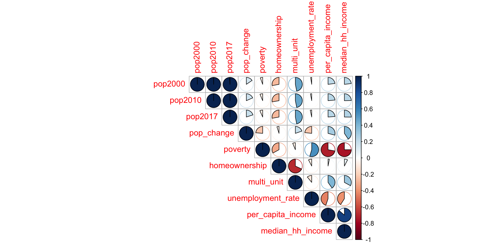
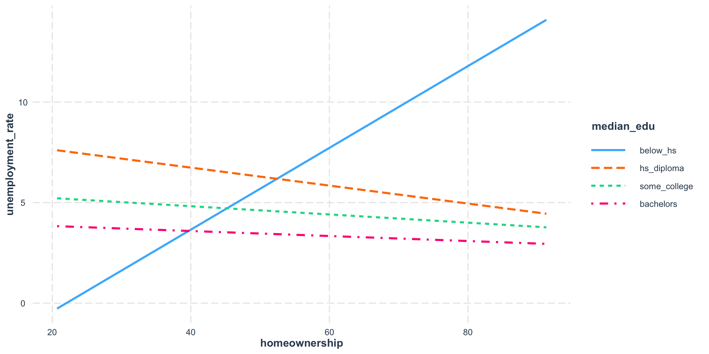
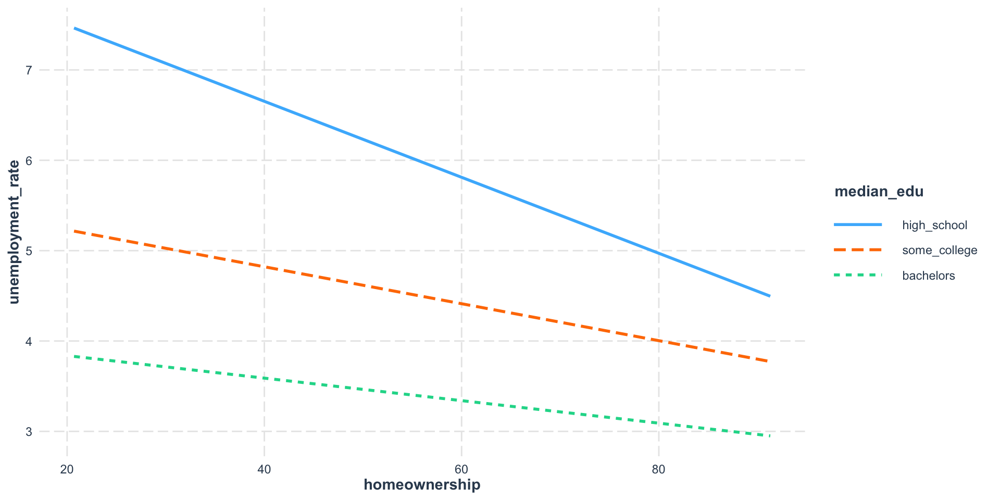

Stats Modeling in R: Week 4
Visualizing Correlation
We’re going to install and load the corrplot and usdata packages. Also load the tidyverse.
County Dataset
There is a county dataset inside the usdata package that we want to use. Let’s take a look at the variables.
name state pop2000 pop2010
Length:3142 Texas : 254 Min. : 67 Min. : 82
Class :character Georgia : 159 1st Qu.: 11224 1st Qu.: 11114
Mode :character Virginia: 133 Median : 24621 Median : 25872
Kentucky: 120 Mean : 89650 Mean : 98262
Missouri: 115 3rd Qu.: 61775 3rd Qu.: 66780
Kansas : 105 Max. :9519338 Max. :9818605
(Other) :2256 NA's :3
pop2017 pop_change poverty homeownership
Min. : 88 Min. :-33.6300 Min. : 2.40 Min. : 0.00
1st Qu.: 10976 1st Qu.: -1.9700 1st Qu.:11.30 1st Qu.:69.50
Median : 25857 Median : -0.0600 Median :15.20 Median :74.60
Mean : 103763 Mean : 0.5339 Mean :15.97 Mean :73.27
3rd Qu.: 67756 3rd Qu.: 2.3750 3rd Qu.:19.40 3rd Qu.:78.40
Max. :10163507 Max. : 37.1900 Max. :52.00 Max. :91.30
NA's :3 NA's :3 NA's :2
multi_unit unemployment_rate metro median_edu
Min. : 0.00 Min. : 1.620 no :1974 below_hs : 2
1st Qu.: 6.10 1st Qu.: 3.520 yes :1165 hs_diploma :1397
Median : 9.70 Median : 4.360 NA's: 3 some_college:1695
Mean :12.32 Mean : 4.611 bachelors : 46
3rd Qu.:15.90 3rd Qu.: 5.355 NA's : 2
Max. :98.50 Max. :19.070
NA's :3
per_capita_income median_hh_income smoking_ban
Min. :10467 Min. : 19264 none :1927
1st Qu.:21772 1st Qu.: 41126 partial : 635
Median :25445 Median : 48072 complete: 0
Mean :26093 Mean : 49765 NA's : 580
3rd Qu.:29276 3rd Qu.: 55771
Max. :69533 Max. :129588
NA's :2 NA's :2 Visualizing Correlation
We only want the numeric variables for our correlation plot so let’s create a new object.
# A tibble: 6 × 10
pop2000 pop2010 pop2017 pop_change poverty homeownership multi_unit
<dbl> <dbl> <int> <dbl> <dbl> <dbl> <dbl>
1 43671 54571 55504 1.48 13.7 77.5 7.2
2 140415 182265 212628 9.19 11.8 76.7 22.6
3 29038 27457 25270 -6.22 27.2 68 11.1
4 20826 22915 22668 0.73 15.2 82.9 6.6
5 51024 57322 58013 0.68 15.6 82 3.7
6 11714 10914 10309 -2.28 28.5 76.9 9.9
# ℹ 3 more variables: unemployment_rate <dbl>, per_capita_income <dbl>,
# median_hh_income <int>Visualizing Correlation
Exercise: Make a Correlation Plot
Look at the help menu for the corrplot function and change the method argument to something other than “pie”.
Next: Interactions
We’re going to explore a relatively new R package called interactions. You can find details at interactions.jacob-long.com. The creator of this package is a faculty member at University of South Carolina.
What is an interaction?
An interaction is when a predictor’s (X) effect on the outcome (Y) varies based on the values of another predictor (Z) in your model.
In other words, X’s effect on Y is contingent on Z.
An interaction is also refered to as a moderated relationship.
Regression with an Interaction
Outcome: Unemployment Rate
Predictors: Homeownership, Median Education, and the interaction between the two predictors
Regression with an Interaction
Call:
lm(formula = unemployment_rate ~ homeownership + median_edu +
homeownership:median_edu, data = county)
Residuals:
Min 1Q Median 3Q Max
-3.6118 -0.9726 -0.2194 0.6889 13.0705
Coefficients:
Estimate Std. Error t value Pr(>|t|)
(Intercept) -4.47850 3.26388 -1.372 0.170118
homeownership 0.20338 0.05244 3.879 0.000107 ***
median_eduhs_diploma 13.00813 3.29701 3.945 8.14e-05 ***
median_edusome_college 10.11798 3.28116 3.084 0.002063 **
median_edubachelors 8.56592 3.44704 2.485 0.013007 *
homeownership:median_eduhs_diploma -0.24808 0.05281 -4.698 2.74e-06 ***
homeownership:median_edusome_college -0.22383 0.05264 -4.252 2.18e-05 ***
homeownership:median_edubachelors -0.21584 0.05501 -3.924 8.91e-05 ***
---
Signif. codes: 0 '***' 0.001 '**' 0.01 '*' 0.05 '.' 0.1 ' ' 1
Residual standard error: 1.535 on 3131 degrees of freedom
(3 observations deleted due to missingness)
Multiple R-squared: 0.1351, Adjusted R-squared: 0.1331
F-statistic: 69.86 on 7 and 3131 DF, p-value: < 2.2e-16Visualizing the Interaction
Why does this look insane?
This is why…
Yikes. Deal with that Factor
We’re going to continue working with the county dataset but first we need contend with that factor level issue.
# There are only two counties (out of 3K)
# with a median education less than high school.
# We're going to merge the "below_hs" level with "hs_diploma"
county$median_edu <- fct_collapse(county$median_edu,
high_school = c("hs_diploma", "below_hs"))
levels(county$median_edu)[1] "high_school" "some_college" "bachelors" Regression Model Round 2
Now we’re going to run the regression with the updated factor.
Do we still have an interaction?
Call:
lm(formula = unemployment_rate ~ homeownership + median_edu +
homeownership:median_edu, data = county)
Residuals:
Min 1Q Median 3Q Max
-3.6007 -0.9751 -0.2206 0.6898 13.1153
Coefficients:
Estimate Std. Error t value Pr(>|t|)
(Intercept) 8.334384 0.462596 18.017 < 2e-16 ***
homeownership -0.042044 0.006200 -6.781 1.42e-11 ***
median_edusome_college -2.694908 0.572618 -4.706 2.63e-06 ***
median_edubachelors -4.246970 1.204927 -3.525 0.00043 ***
homeownership:median_edusome_college 0.021599 0.007729 2.795 0.00523 **
homeownership:median_edubachelors 0.029589 0.017791 1.663 0.09638 .
---
Signif. codes: 0 '***' 0.001 '**' 0.01 '*' 0.05 '.' 0.1 ' ' 1
Residual standard error: 1.541 on 3133 degrees of freedom
(3 observations deleted due to missingness)
Multiple R-squared: 0.1284, Adjusted R-squared: 0.127
F-statistic: 92.3 on 5 and 3133 DF, p-value: < 2.2e-16Visualizing the Interaction
Any better?
Categorical (Factor) Predictors
What if we had an interaction between two categorical predictors?
Model Summary
Call:
lm(formula = unemployment_rate ~ metro + median_edu + metro:median_edu,
data = county)
Residuals:
Min 1Q Median 3Q Max
-3.5813 -0.9994 -0.2313 0.7102 13.9702
Coefficients:
Estimate Std. Error t value Pr(>|t|)
(Intercept) 5.24132 0.04719 111.059 < 2e-16 ***
metroyes -0.14151 0.09993 -1.416 0.157
median_edusome_college -1.11151 0.07056 -15.753 < 2e-16 ***
median_edubachelors -2.36132 0.58999 -4.002 6.42e-05 ***
metroyes:median_edusome_college 0.19111 0.12535 1.525 0.127
metroyes:median_edubachelors 0.60612 0.64647 0.938 0.349
---
Signif. codes: 0 '***' 0.001 '**' 0.01 '*' 0.05 '.' 0.1 ' ' 1
Residual standard error: 1.556 on 3133 degrees of freedom
(3 observations deleted due to missingness)
Multiple R-squared: 0.1108, Adjusted R-squared: 0.1094
F-statistic: 78.09 on 5 and 3133 DF, p-value: < 2.2e-16Let’s visualize our relationships
Change the function to cat_plot when both the predictor and moderator are categorical.
Visualizing the (non) Interaction

More Statistics?!

Submit a Methods and Analysis Lab Consultation. It’s free and we’re friendly!
I also teach credit-bearing statistics courses for departments
Final Workshop Series Feedback
Insert QR Code
You can always email me at slkelly@olemiss.edu or slkelly@go.olemiss.edu
Thank you for participating in Stats Modeling with R!
S.Kelly | Stats Modeling in R | Fall 2025